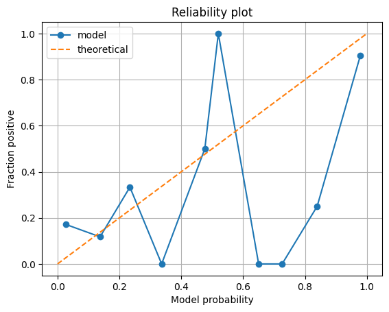
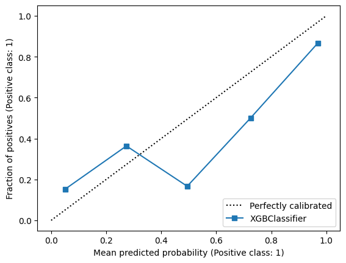
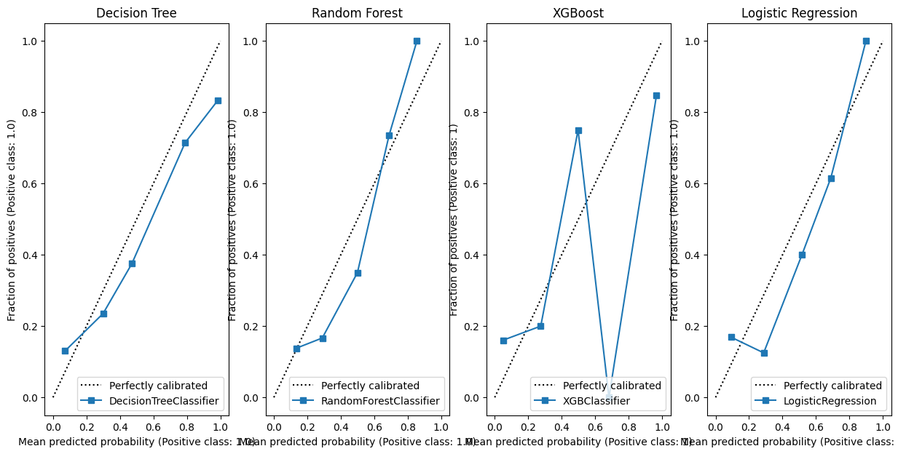
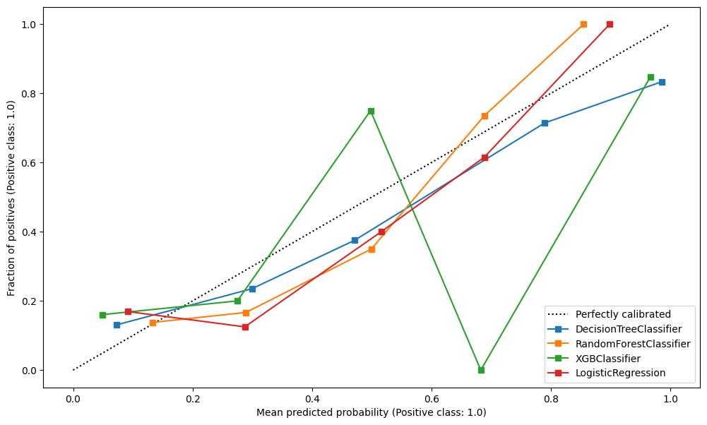
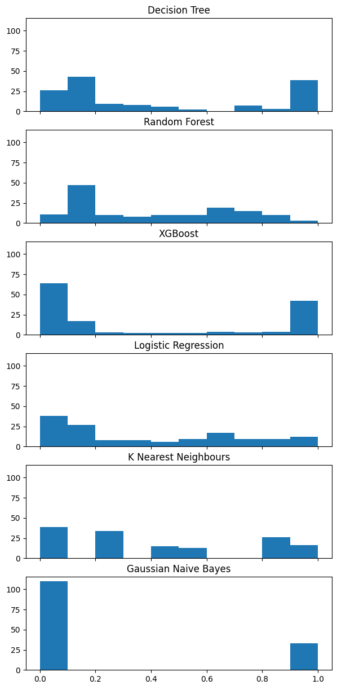
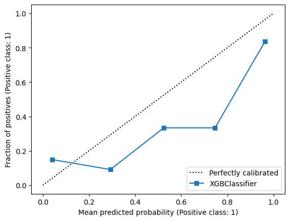
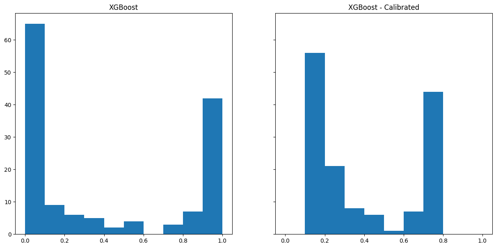
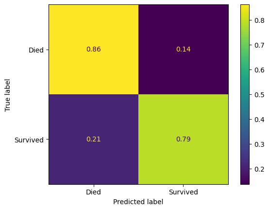
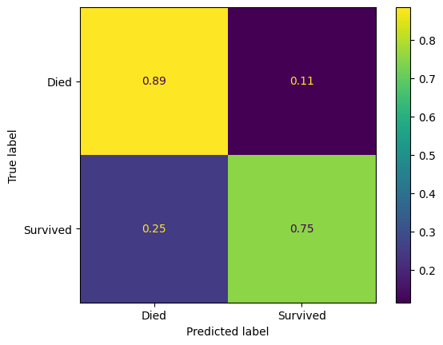

import pandas as pd
import numpy as np
from time import time
import matplotlib.pyplot as plt
from xgboost import XGBClassifier
from sklearn.tree import DecisionTreeClassifier
from sklearn.neighbors import KNeighborsClassifier
from sklearn.naive_bayes import GaussianNB
from sklearn.linear_model import LogisticRegression
from sklearn.ensemble import RandomForestClassifier
from sklearn.model_selection import train_test_split
from sklearn.metrics import ConfusionMatrixDisplay, confusion_matrix, f1_score, precision_score, \
recall_score
from sklearn.calibration import calibration_curve, CalibrationDisplay
from sklearn.preprocessing import StandardScaler
%matplotlib inline32 Checking Model Calibration (Titanic Dataset)
Model calibration plots can be an important way to assess your model, particularly when the predicted probabilities are important.
Let’s first import our processed data.
try:
data = pd.read_csv("data/processed_data.csv")
except FileNotFoundError:
# Download processed data:
address = 'https://raw.githubusercontent.com/MichaelAllen1966/' + \
'1804_python_healthcare/master/titanic/data/processed_data.csv'
data = pd.read_csv(address)
# Create a data subfolder if one does not already exist
import os
data_directory ='./data/'
if not os.path.exists(data_directory):
os.makedirs(data_directory)
# Save data
data.to_csv(data_directory + 'processed_data.csv', index=False)
data = data.astype(float)
# Drop Passengerid (axis=1 indicates we are removing a column rather than a row)
# We drop passenger ID as it is not original data
data.drop('PassengerId', inplace=True, axis=1)
X = data.drop('Survived',axis=1) # X = all 'data' except the 'survived' column
y = data['Survived'] # y = 'survived' column from 'data'
feature_names = X.columns.tolist()
X_train_val, X_test, y_train_val, y_test = train_test_split(X, y, test_size=0.2, random_state=42)
X_train, X_validate, y_train, y_validate = train_test_split(X_train_val, y_train_val, test_size=0.2, random_state=42)
print(f"Training Dataset Samples: {len(X_train)}")
print(f"Validation Dataset Samples: {len(X_validate)}")
print(f"Testing Dataset Samples: {len(X_test)}")Training Dataset Samples: 569
Validation Dataset Samples: 143
Testing Dataset Samples: 179Let’s fit an initial model.
model = XGBClassifier(random_state=42)
model.fit(X_train, y_train)
y_pred_train = model.predict(X_train)
y_pred_val = model.predict(X_validate)The first major step is predicting the probabilities of survival.
y_calibrate_probabilities = model.predict_proba(X_validate)[:,1]
y_calibrate_probabilitiesarray([2.05822676e-01, 3.52452919e-02, 9.60064888e-01, 9.88666415e-01,
2.01759231e-03, 3.81041132e-02, 9.79259014e-01, 9.98046637e-01,
2.01433767e-02, 3.72755504e-03, 9.89065170e-01, 1.33913994e-01,
3.56350005e-01, 9.77980614e-01, 9.99136150e-01, 3.38162435e-03,
1.04845390e-02, 3.55994864e-03, 3.69379260e-02, 1.35302618e-01,
9.92524981e-01, 8.23074400e-01, 7.01691031e-01, 9.22003865e-01,
9.63228106e-01, 3.20929438e-02, 1.01891626e-03, 9.91041601e-01,
5.07083893e-01, 1.61430892e-03, 9.04381633e-01, 9.59128499e-01,
2.63705608e-02, 1.39667233e-03, 7.53330241e-04, 1.13243781e-01,
6.23617694e-02, 5.43069188e-03, 1.52443694e-02, 9.99328375e-01,
9.59980607e-01, 5.96146807e-02, 9.97057915e-01, 2.48304289e-02,
9.97931361e-01, 9.61281121e-01, 5.95116755e-03, 5.50567806e-02,
5.32550991e-01, 7.36888684e-03, 6.07086957e-01, 2.72897142e-03,
2.00232957e-03, 2.91303862e-02, 8.32613051e-01, 9.96867716e-01,
6.10939553e-03, 4.82243709e-02, 1.09095879e-01, 1.85978502e-01,
9.91041601e-01, 1.86239276e-03, 8.54294449e-02, 9.82371092e-01,
4.84345341e-03, 3.17367172e-04, 4.94391285e-02, 4.86289591e-01,
5.34910895e-02, 3.31237465e-02, 5.33424504e-02, 9.98463035e-01,
1.36515990e-01, 1.19548671e-01, 1.14806831e-01, 8.01631901e-03,
9.96852696e-01, 3.16940248e-01, 9.94843483e-01, 6.41588688e-01,
9.88738298e-01, 6.91143870e-01, 5.78789674e-02, 9.99705255e-01,
7.05600670e-03, 1.09724440e-02, 6.32528588e-03, 5.96146807e-02,
9.68342274e-02, 6.60832405e-01, 4.04346781e-03, 2.64491490e-03,
9.84592974e-01, 1.63405478e-01, 1.10971414e-01, 9.82463479e-01,
3.71817723e-02, 9.72673178e-01, 1.98875666e-01, 1.27914354e-01,
9.75768328e-01, 9.79870483e-02, 9.60265517e-01, 9.41147208e-01,
4.29043584e-02, 5.43069188e-03, 9.44249749e-01, 1.75828557e-03,
6.48384243e-02, 9.45494026e-02, 4.38896380e-03, 2.50388514e-02,
4.16158959e-02, 1.18054882e-01, 4.66120988e-01, 2.81780422e-01,
9.67573524e-01, 1.01316497e-02, 1.48710921e-01, 6.32528588e-03,
6.32528588e-03, 8.05518329e-01, 9.99740303e-01, 1.72039345e-01,
9.97362077e-01, 7.45192885e-01, 6.37774915e-02, 1.25395339e-02,
9.96176243e-01, 9.98697460e-01, 9.20668066e-01, 8.95885170e-01,
7.31337190e-01, 6.85901716e-02, 2.14473590e-01, 9.96718943e-01,
1.04652986e-01, 9.91419435e-01, 9.98377800e-01, 5.43069188e-03,
7.94559438e-03, 1.61430892e-03, 1.46020606e-01], dtype=float32)32.1 Manual Calculation - equal-width bins
Now we can create a reliability plot, binning cases by their predicted probability fo survival.
# Bin data with numpy digitize (this will assign a bin to each case)
step = 0.10
bins = np.arange(step, 1+step, step)
digitized = np.digitize(y_calibrate_probabilities, bins)
# Put data in DataFrame
reliability = pd.DataFrame()
reliability['bin'] = digitized
reliability['probability'] = y_calibrate_probabilities
reliability['observed'] = y_validate.values
# Summarise data by bin in new dataframe
reliability_summary = pd.DataFrame()
# Add bins to summary
reliability_summary['bin'] = bins
# Calculate mean of predicted probability of survival for each bin
reliability_summary['confidence'] = \
reliability.groupby('bin').mean()['probability']
# Calculate the proportion of passengers who survive in each bin
reliability_summary['fraction_positive'] = \
reliability.groupby('bin').mean()['observed']
reliability_summary| bin | confidence | fraction_positive | |
|---|---|---|---|
| 0 | 0.1 | 0.026164 | 0.171875 |
| 1 | 0.2 | 0.137591 | 0.117647 |
| 2 | 0.3 | 0.234026 | 0.333333 |
| 3 | 0.4 | 0.336645 | 0.000000 |
| 4 | 0.5 | 0.476205 | 0.500000 |
| 5 | 0.6 | 0.519817 | 1.000000 |
| 6 | 0.7 | 0.650163 | 0.000000 |
| 7 | 0.8 | 0.726074 | 0.000000 |
| 8 | 0.9 | 0.839273 | 0.250000 |
| 9 | 1.0 | 0.978974 | 0.904762 |
Let’s now observe this on a plot.
plt.plot(reliability_summary['confidence'],
reliability_summary['fraction_positive'],
linestyle='-',
marker='o',
label='model')
plt.plot([0,1],[0,1],
linestyle='--',
label='theoretical')
plt.xlabel('Model probability')
plt.ylabel('Fraction positive')
plt.title('Reliability plot')
plt.grid()
plt.legend()
plt.show()
32.2 The sklearn reliability plot
CalibrationDisplay.from_estimator(model, X_test, y_test)
plt.show()
Let’s compare this for a series of classifiers.
model_dt = DecisionTreeClassifier(max_depth=6)
model_rf = RandomForestClassifier(random_state=42, max_depth=6)
model_xgb = XGBClassifier(random_state=42)
model_lr = LogisticRegression()
fig, (ax1, ax2, ax3, ax4) = plt.subplots(1, 4, figsize=(15, 7))
#######################
# Decision Tree #
#######################
CalibrationDisplay.from_estimator(model_dt.fit(X_train, y_train), X_validate, y_validate, ax=ax1)
ax1 = ax1.set_title("Decision Tree")
#######################
# Random Forest #
#######################
CalibrationDisplay.from_estimator(model_rf.fit(X_train, y_train), X_validate, y_validate, ax=ax2)
ax2 = ax2.set_title("Random Forest")
#######################
# XGBoost #
#######################
CalibrationDisplay.from_estimator(model_xgb.fit(X_train, y_train), X_validate, y_validate, ax=ax3)
ax3 = ax3.set_title("XGBoost")
#######################
# Logistic Regression #
#######################
# Initialise a new scaling object for normalising input data
sc = StandardScaler()
# Apply the scaler to the training and test sets
train_std=sc.fit_transform(X_train)
val_std = sc.fit_transform(X_validate)
test_std=sc.fit_transform(X_test)
CalibrationDisplay.from_estimator(model_lr.fit(train_std, y_train), val_std , y_validate, ax=ax4)
ax4 = ax4.set_title("Logistic Regression")
Repeat this, plotting them overlaid.
fig, ax = plt.subplots(figsize=(12,7))
CalibrationDisplay.from_estimator(model_dt.fit(X_train, y_train), X_validate, y_validate, ax=ax)
CalibrationDisplay.from_estimator(model_rf.fit(X_train, y_train), X_validate, y_validate, ax=ax)
CalibrationDisplay.from_estimator(model_xgb.fit(X_train, y_train), X_validate, y_validate, ax=ax)
CalibrationDisplay.from_estimator(model_lr.fit(train_std, y_train), val_std , y_validate, ax=ax)
32.2.1 Histograms
fig, (ax1, ax2, ax3, ax4, ax5, ax6) = plt.subplots(6, 1, figsize=(7, 15), sharey=True, sharex=True)
#######################
# Decision Tree #
#######################
ax1.hist(model_dt.predict_proba(X_validate)[:,1], bins=np.arange(0,1.01,0.1))
ax1 = ax1.set_title("Decision Tree")
#######################
# Random Forest #
#######################
ax2.hist(model_rf.predict_proba(X_validate)[:,1], bins=np.arange(0,1.01,0.1))
ax2 = ax2.set_title("Random Forest")
#######################
# XGBoost #
#######################
ax3.hist(model_xgb.predict_proba(X_validate)[:,1], bins=np.arange(0,1.01,0.1))
ax3 = ax3.set_title("XGBoost")
#######################
# Logistic Regression #
#######################
ax4.hist(model_lr.predict_proba(val_std)[:,1], bins=np.arange(0,1.01,0.1))
ax4 = ax4.set_title("Logistic Regression")
#######################
# KNN #
#######################
ax5.hist(KNeighborsClassifier().fit(train_std, y_train).predict_proba(val_std)[:,1], bins=np.arange(0,1.01,0.1))
ax5 = ax5.set_title("K Nearest Neighbours")
#######################
# Naive Bayes #
#######################
ax6.hist(GaussianNB().fit(X_train, y_train).predict_proba(X_validate)[:,1], bins=np.arange(0,1.01,0.1))
ax6 = ax6.set_title("Gaussian Naive Bayes")
33 Calibrating Classifiers
Let’s remind ourself of our calibration for our XGBoost model.
X_train, X_calibrate, y_train, y_calibrate = train_test_split(X_train, y_train, test_size=0.2, random_state=42)
model_xgb = XGBClassifier()
model_xgb.fit(X_train, y_train)
CalibrationDisplay.from_estimator(model_xgb, X_validate, y_validate)
We can use CalibratedClassifierCV to recalibrate a model and then plot the output.
from sklearn.calibration import CalibratedClassifierCV
model_xgb_calibrated = CalibratedClassifierCV(model_xgb, cv="prefit")
model_xgb_calibrated.fit(X_calibrate, y_calibrate)CalibratedClassifierCV(cv='prefit',
estimator=XGBClassifier(base_score=None, booster=None,
callbacks=None,
colsample_bylevel=None,
colsample_bynode=None,
colsample_bytree=None,
device=None,
early_stopping_rounds=None,
enable_categorical=False,
eval_metric=None,
feature_types=None, gamma=None,
grow_policy=None,
importance_type=None,
interaction_constraints=None,
learning_rate=None, max_bin=None,
max_cat_threshold=None,
max_cat_to_onehot=None,
max_delta_step=None,
max_depth=None, max_leaves=None,
min_child_weight=None,
missing=nan,
monotone_constraints=None,
multi_strategy=None,
n_estimators=None, n_jobs=None,
num_parallel_tree=None,
random_state=None, ...))In a Jupyter environment, please rerun this cell to show the HTML representation or trust the notebook. On GitHub, the HTML representation is unable to render, please try loading this page with nbviewer.org.
CalibratedClassifierCV(cv='prefit',
estimator=XGBClassifier(base_score=None, booster=None,
callbacks=None,
colsample_bylevel=None,
colsample_bynode=None,
colsample_bytree=None,
device=None,
early_stopping_rounds=None,
enable_categorical=False,
eval_metric=None,
feature_types=None, gamma=None,
grow_policy=None,
importance_type=None,
interaction_constraints=None,
learning_rate=None, max_bin=None,
max_cat_threshold=None,
max_cat_to_onehot=None,
max_delta_step=None,
max_depth=None, max_leaves=None,
min_child_weight=None,
missing=nan,
monotone_constraints=None,
multi_strategy=None,
n_estimators=None, n_jobs=None,
num_parallel_tree=None,
random_state=None, ...))XGBClassifier(base_score=None, booster=None, callbacks=None,
colsample_bylevel=None, colsample_bynode=None,
colsample_bytree=None, device=None, early_stopping_rounds=None,
enable_categorical=False, eval_metric=None, feature_types=None,
gamma=None, grow_policy=None, importance_type=None,
interaction_constraints=None, learning_rate=None, max_bin=None,
max_cat_threshold=None, max_cat_to_onehot=None,
max_delta_step=None, max_depth=None, max_leaves=None,
min_child_weight=None, missing=nan, monotone_constraints=None,
multi_strategy=None, n_estimators=None, n_jobs=None,
num_parallel_tree=None, random_state=None, ...)XGBClassifier(base_score=None, booster=None, callbacks=None,
colsample_bylevel=None, colsample_bynode=None,
colsample_bytree=None, device=None, early_stopping_rounds=None,
enable_categorical=False, eval_metric=None, feature_types=None,
gamma=None, grow_policy=None, importance_type=None,
interaction_constraints=None, learning_rate=None, max_bin=None,
max_cat_threshold=None, max_cat_to_onehot=None,
max_delta_step=None, max_depth=None, max_leaves=None,
min_child_weight=None, missing=nan, monotone_constraints=None,
multi_strategy=None, n_estimators=None, n_jobs=None,
num_parallel_tree=None, random_state=None, ...)fig, (ax1, ax2) = plt.subplots(1, 2, figsize=(15, 7), sharey=True, sharex=True)
#######################
# XGBoost #
#######################
ax1.hist(model_xgb.predict_proba(X_validate)[:,1], bins=np.arange(0,1.01,0.1))
ax1 = ax1.set_title("XGBoost")
########################
# XGBoost - Calibrated #
########################
ax2.hist(model_xgb_calibrated.predict_proba(X_validate)[:,1], bins=np.arange(0,1.01,0.1))
ax2 = ax2.set_title("XGBoost - Calibrated")
34 Compare performance
Let’s compare the performance of our calibrated and uncalibrated model, does this make any difference?
def pred_assess(name, model=XGBClassifier(random_state=42),
X_train=X_train, X_validate=X_validate, y_train=y_train, y_validate=y_validate,
show_confusion_matrix=False
):
y_pred_train = model.predict(X_train)
y_pred_val = model.predict(X_validate)
if show_confusion_matrix:
confusion_matrix_titanic = ConfusionMatrixDisplay(
confusion_matrix=confusion_matrix(
y_true=y_validate,
y_pred=y_pred_val,
normalize='true'
),
display_labels=["Died", "Survived"]
)
confusion_matrix_titanic.plot()
return pd.DataFrame({
'Accuracy (training)': np.mean(y_pred_train == y_train).round(4),
'Accuracy (validation)': np.mean(y_pred_val == y_validate).round(4),
'Precision (validation)': precision_score(y_validate, y_pred_val, average='macro').round(4),
'Recall (validation)': recall_score(y_validate, y_pred_val, average='macro').round(4),
'features': ", ".join(X_train.columns.tolist())
}, index=[name]
)pd.concat(
[pred_assess(model=model_xgb, name="XBoost"),
pred_assess(model=model_xgb_calibrated, name="XBoost - Calibrated")]
)| Accuracy (training) | Accuracy (validation) | Precision (validation) | Recall (validation) | features | |
|---|---|---|---|---|---|
| XBoost | 0.989 | 0.8322 | 0.8239 | 0.8239 | Pclass, Age, SibSp, Parch, Fare, AgeImputed, E... |
| XBoost - Calibrated | 0.989 | 0.8322 | 0.8269 | 0.8175 | Pclass, Age, SibSp, Parch, Fare, AgeImputed, E... |
Let’s just look at the confusion matrices.
pred_assess(model=model_xgb, name="XGBoost", show_confusion_matrix=True)| Accuracy (training) | Accuracy (validation) | Precision (validation) | Recall (validation) | features | |
|---|---|---|---|---|---|
| XGBoost | 0.989 | 0.8322 | 0.8239 | 0.8239 | Pclass, Age, SibSp, Parch, Fare, AgeImputed, E... |

pred_assess(model=model_xgb_calibrated, name="XGBoost - calibrated", show_confusion_matrix=True)| Accuracy (training) | Accuracy (validation) | Precision (validation) | Recall (validation) | features | |
|---|---|---|---|---|---|
| XGBoost - calibrated | 0.989 | 0.8322 | 0.8269 | 0.8175 | Pclass, Age, SibSp, Parch, Fare, AgeImputed, E... |
